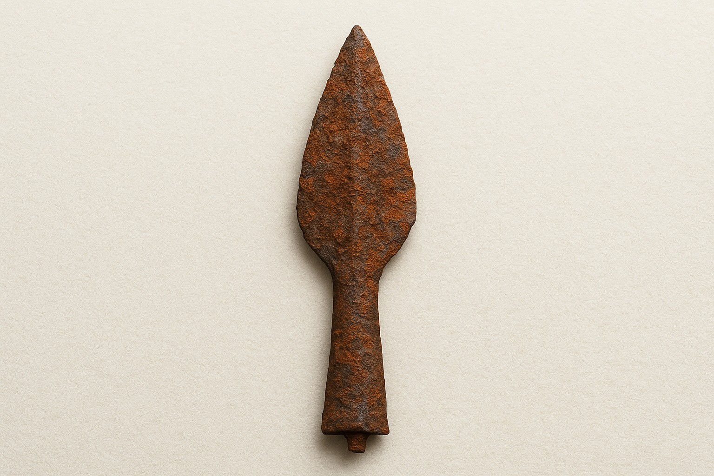
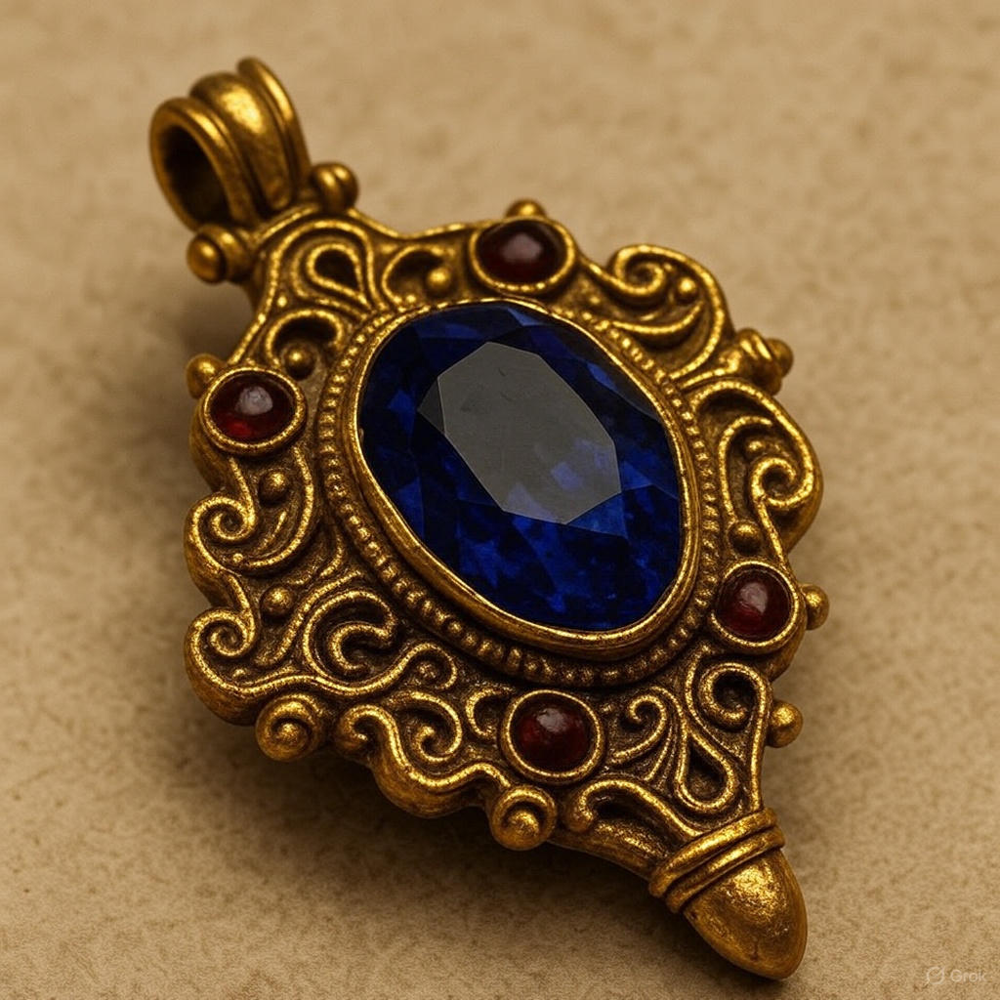
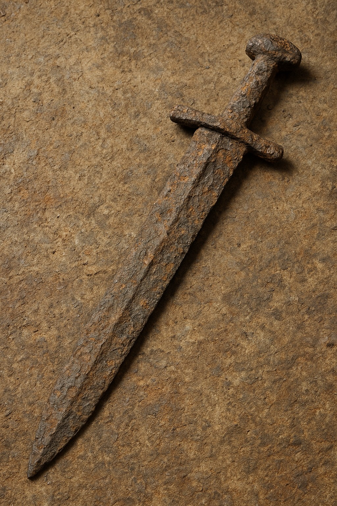

Archaeology

Rusted Iron Spearhead
Material: Pure Iron with trace elements of other metals (Iron)
Size/Weight/Shape: 25 cm, tapered, 300 grams
Estimated Age: ~1,600 years (Late Middle Ages)
Preservation State: Corroded with flaking rust
Location Found: Markovan battlefield, Ravni Plain (45.267 N, 21.902 E)
Likely Purpose: Combat weapon
Evidence of Use: Damage around tip and along edge
Manufacture Clues:Forged with central ridge and notched base
Found With: Charred wood, and leather fragments
Burial or Habitat Context: Scattered at former settlement
Symbolism: Associated with medieval knights
Comparison: Resembles spears from Markovic site

Medieval Sapphire Pendant
Material: Gold encrusted with rubies, and a showstopper sapphire
Size/Weight/Shape: 6 cm diameter, oval pendant
Estimated Age: ~170 years
Preservation State: Tarnished gold surface, intact form
Location Found: Castle ruins, Vienna, Austria>
Likely Purpose: Personal ornament, possibly worn by royalty
Evidence of Use: Worn around edges, tarnished surface
Manufacture Clues: Strong engraved features, historic masonary
Found With:Tattered embriodered cloth, and other historic Austrian Jewels
Burial or Habitat Context: Recovered from Castle ruins
Symbolism: Strong masonary, and engravings, likely to present status
Comparison: Resembles pendants from neighboring region (Prussia)

Rusted Sword
Material: Purely Iron
Size/Weight/Shape: 30 cm tall, 12 cm diameter
Estimated Age: 1,600 years
Preservation State: severe rust due to purity of element, surface weathered, overall shape preserved
Location Found: Northern France
Likely Purpose: Defence from wars/ status
Evidence of Use: Chipped sides, strong weathering
Manufacture Clues: Hand hammered and fired with unique masonary skills
Found With: Metal armor fragments
Burial or Habitat Context: Burial with armor pieces in thick layers of dirt indicating a burial plot for a knight
Symbolism: Longsword symbolize knighthood
Comparison: Similar artifact was found in Markovic site
This is a fictitious website created purely for academic purposes. All images were generated with AI and curated, edited, and validated by a human.